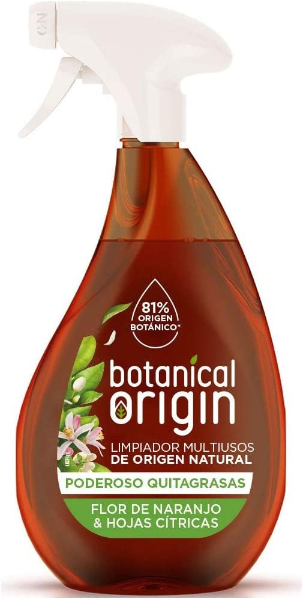
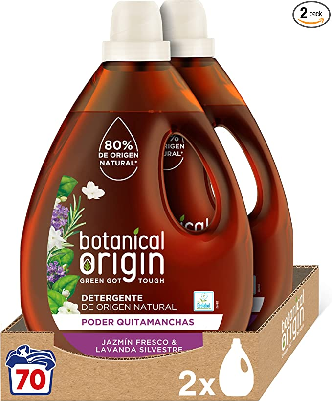
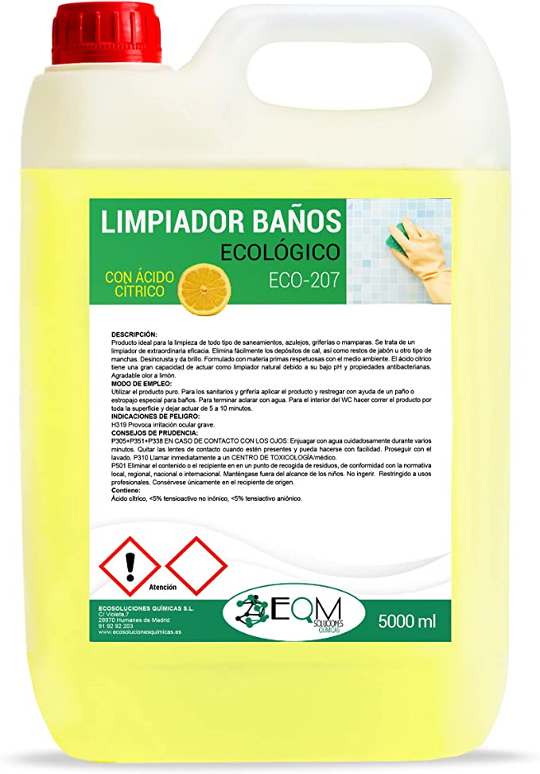

Nuestros productos
-

Limpiador Multiusos
El equipo de BOTANICAL ORIGIN hemos puesto todo nuestro esfuerzo para encontrar una fórmula que fuera respetuosa con el medio ambiente y, al mismo tiempo, que no implicara renunciar a la eficacia. Si aún no has probado productos con ingredientes naturales porque piensas que no limpian, que no huelen bien o por cualquier otra razón. ¡Piénsatelo dos veces! Botanical Origin es una marca que contiene hasta 97 % de ingredientes de origen botánico, pero que no quiere renunciar a una limpieza efectiva. Limpieza ECO que funciona.
Más información -

Detergente
Nuestro detergente para la ropa ecológico, con un ingredientes de origen botánico, elimina las manchas más difíciles incluso en agua fría, dejando la ropa limpia y con una intensa fragancia única. Además, no deja químicos abrasivos en la ropa que puedan causar una reacción adversa en pieles sensibles y no contiene ni colorantes ni abrillantadores artificiales. Puedes utilizarlo en la lavadora para la ropa de toda la familia, incluso la ropa de tu bebé. Cuenta con la etiqueta ecológica Ecolabel
Más información -

Limpiador de baños
Producto diseñado para la limpieza de todo tipo de saneamientos, azulejos, griferías o mamparas.
Se trata de un limpiador de extraordinaria eficacia.
Elimina fácilmente los depósitos de cal, así como restos de jabón y otro tipo de manchas.
Desincrusta y da brillo.
El ácido cítrico tiene una gran capacidad de actuar como limpiador natural debido a su bajo pH y propiedades antibacterianas.
PRODUCTO ECOLÓGICO, formulado con materia primas respetuosas con el medio ambiente.
Más información